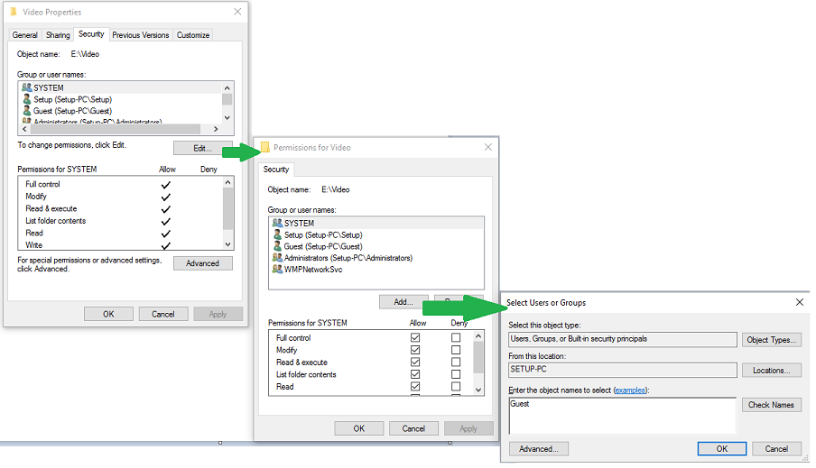

Eenmaal aangemeld op een systeem wil je waarschijnlijk bestanden manipuleren (aanmaken, wijzigen, wissen). Het is echter niet de bedoeling dat de ene gebruiker de andere gebruiker zijn bestanden kan aanpassen zonder dat daar toestemming voor gegeven is geweest.
Een besturingssysteem zorgt hiervoor door bestanden die aangemaakt zijn door een gebruiker ook bepaalde rechten te geven. Hetzelfde verhaal geldt ook voor mappen. Geen rechten = geen toegang.
In Windows kan je de rechten makkelijk aanpassen via een Wizard:

Ook in Linux kan je rechten toepassen op mappen en bestanden. In het labo Linux Geavanceerd staan we daar uitgebreid bij stil.